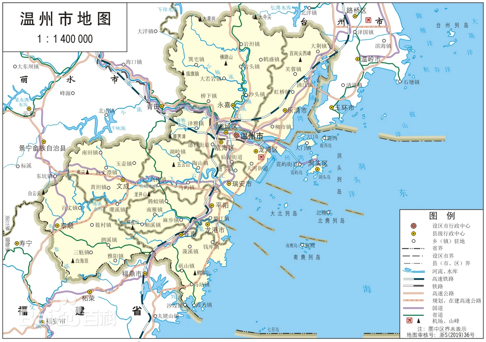

|
|
浙江温州 |
| 首页 | 温州雁荡山 | 温州名人 | 温州风情 | 地理位置 | 航拍温州 |
|  |
温州市位于浙江省东南部，东濒东海，南与福建省宁德市的福鼎、柘荣、寿宁三县毗邻，西和丽水市的缙云、青田、景宁畲族自治县相接，北和东北与台州市的仙居、黄岩、温岭、玉环四县为界。全境介于北纬27°03’—28°36′，东经119°37′—121°18′之间。地势自西向东倾斜，西部属浙南中山区，迤东高度逐渐降低为丘陵地，东部是沿海平原。陆域面积12110平方千米，海域面积8649平方千米，海区负200米等深线以内的面积6.67万平方千米 温州市的地貌受地质构造的影响，地势自西向东呈梯状倾斜。洞宫山脉自福建省东北东走向延伸于泰顺、文成二县，括苍山脉从永嘉西部东北东走向至黄岩、仙居，海拔多在千米以上，又因断裂作用，构成巍峨的中山山地。和它们平行，南雁荡山脉和北雁荡山脉逐渐降低成千米以下的低山丘陵地带。再东是冲积和海积平原，平原上散布着蚀余的孤山和孤丘。海岸有基石质和淤泥质二种。由于河流多和山脉直交割切，河口常成溺谷形。沿海岛屿是山地入海的延续，都是大陆岛，在海岸和海之间，有或宽或窄的滩涂，是新生的土地 |
| 瓯越之都，鱼米之乡 |